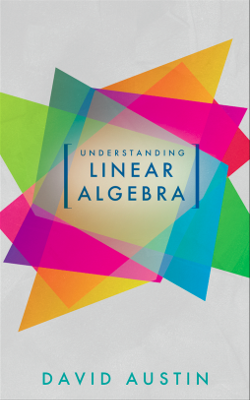

Understanding Linear Algebra
An open-access linear algebra textbook
August 2026 updates
-
While the content is largely unchanged, there has been some maintenance and reorganization of the textbook's PreTeXt source that may affect the numbering of subsections.
-
Most diagrams have been recreated in PreFigure and may be interactively explored using arrow keys.
-
Alt text and image descriptions have been added to all of the figures in the text. Though accessibility requirements vary considerably, the HTML version of Understanding Linear Algebra that is available here should be fully compliant.
-
Understanding Linear Algebra is available for use on Runestone Academy. This version has interactive preview activities as well as a collection of interactive homework sets at the end of many sections. Student work on Runestone can be recorded and graded with results reported back to students at no cost to students and instructors.

Understanding Linear Algebra is a freely available linear algebra textbook suitable for use in a first undergraduate linear algebra course. The text aims to support readers as they develop their ability to reason mathematically, their computational fluency, and their understanding of the role that linear algebra plays in shaping our society. It is also designed to support an active learning classroom environment.
Understanding Linear Algebra is written in PreTeXt and has been endorsed by the Open Textbook Initiative at the American Institute of Mathematics.
Textbook
-
Runestone Academy, with interactive exercises
Activities workbook
Features
-
Understanding Linear Algebra can support a two-course introductory sequence to linear algebra. While it is not meant to serve as an introduction to proofs, activities and exercises support students as they develop their ability to reason mathematically and communicate their understanding. At my university, our first two linear algebra courses do not require calculus as a prerequisite, and we find that many students thrive in it.
-
Understanding Linear Algebra is intended to support active learning. Each section begins with a preview activity for students to complete before class and subsequently contains several activities for students to complete in class, perhaps working collaboratively in small groups. A solutions manual for the activities is available upon request.
-
Each section contains numerous exercises from routine review to more in-depth, conceptual questions. Solutions are also available upon request.
-
The text contains numerous embedded Sage cells to facilitate linear algebraic computations. Relevant Sage commands are introduced as needed and summarized in an appendix.
-
Many applications are introduced and developed in depth to build an appreciation of how linear algebra plays a vital role in our society. These applications include topics such as computer animation, image compression, Google PageRank, least squares, principal component analysis, and singular value decompositions.
-
Interactive diagrams embedded in the text help students develop an intuitive understanding of key linear algebra concepts.
The Mathematical Association of America recognized Understanding Linear Algebra with the 2025 Daniel Solow Author's Award at MathFest 2025. The text has also been endorsed by the Open Textbook Initiative, sponsored by the American Institute of Mathematics.
For instructors
First, I hope Understanding Linear Algebra is a valuable resource for you and your students in whatever way you find most appropriate to use it. I would very much like to hear from you at the email address given below. Since the book is freely available, it's difficult to know how many people are using it and what value they are finding in it.
The book is in use at over 100 institutions, from R1s to community colleges and high schools. There is a community of instructors using ULA, and we share resources such as online homework sets, syllabi, learning objectives, and more. There are also solution manuals for both the activities and exercises available upon request. Please reach out to me to connect with this community.
Contact
David Austin is a professor of mathematics at Grand Valley State University. Questions, feedback, suggestions, and anything else are always welcome:
David Austin, austind at gvsu.edu
License
This work is licensed under a Creative Commons Attribution 4.0 International License.

© David Austin 2017 - 2025